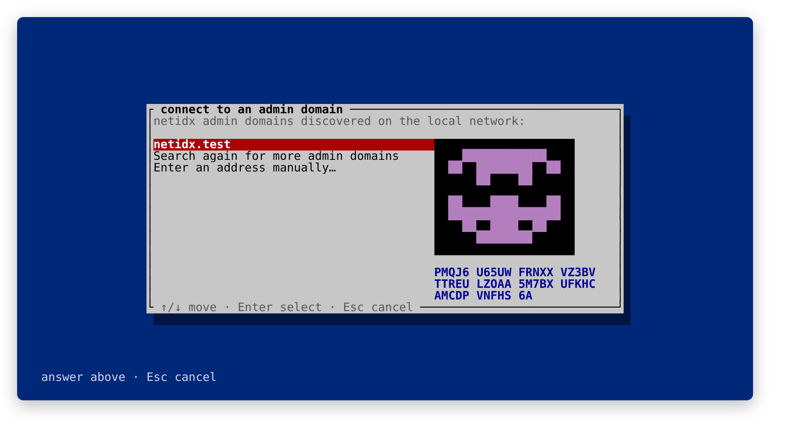

The netidx admin Tool
Every netidx install is shaped by a small handful of JSON files—the client config, resolver-server config, permissions, and, for TLS deployments, keys and certificates.
netidx admin is completely optional. Resolvers, publishers, and
subscribers neither require nor speak to it during normal data-plane
operation. You may build and maintain a deployment entirely by editing those
configuration files. The Configuration chapter documents
that interface.
When you do choose the admin plane, netidx admin is the supported tool for
generating those files, managing certificates, and coordinating changes across
machines.
It brings the whole admin plane together:
- templated installs that lay down a self-consistent set of files for a known role—CA, workstation, network resolver, or publisher host—and register the OS service that brings the node up on boot,
- a certificate authority and an enrollment workflow for TLS deployments,
- remote administration — approving new members, editing permissions, restarting a resolver — over the network, with no SSH, and
- editors for the individual config files that validate before they save.
This chapter is the map. The workflows themselves get their own chapters (installing a role, TLS and the CA, authorization, admin-plane security, and CA recovery); here we cover the shape of the tool and the two ways you drive it.
Two faces, one program
netidx admin has an interactive face and a scripted face, and they are the
same program underneath — every workflow is defined once and both faces call
it. That means the TUI never does anything the CLI can’t, and a script is never
a second-class citizen.
The TUI. Run netidx admin with no subcommand and you get a full-screen
terminal interface. This is the right choice for a human doing setup or
day-to-day administration: it discovers what’s on your machine and your
network, walks you through decisions, and shows you things a flag can’t — like
the identicon you match to approve a new member (below). It needs a real
terminal.

The strict CLI. Run netidx admin <command> --flags… and you get a
non-interactive command that does exactly what you told it. It is strict:
every decision is a flag, and a missing required flag is an error, never a
silent default or a prompt. That is deliberate — it makes the CLI safe to put
in a provisioning script, an Ansible playbook, or a Dockerfile, where a
blocking prompt or an inferred default would be a bug. Every command has an
exhaustive --help; this book covers the common shapes and points you there
for the full flag list.
Use whichever fits: the TUI to learn the system and to run an admin domain by hand, the CLI to automate what you learned.
The command map
netidx admin # no subcommand → interactive TUI
backup <path> # back up the installed role
restore <path> # restore it as a complete install
workstation install|status|update|join # a dev machine: local resolver + client
resolver install|status|update # a network-facing resolver server
add-parent # attach under a parent by delegation
list-delegations|approve-delegation|deny-delegation # (as the parent admin)
publisher install|status|update # a publisher host's client config
ca install # dedicated CA role
init|issue|sign|inspect-csr # lower-level local CA operations
queue|approve|deny # the enrollment queue
issued|revoke # issued certs + revocation (CRL)
servers|remove-server # immutable admin-server inventory
reconcile-ca # retry address/map/CRL fanout
admin # CA admin keyslots (RBAC)
auto-approve|recovery|external # automation + recovery credentials
fingerprint|list
login|logout # sealed reusable admin sessions
perms show|edit # a resolver cluster's permissions, remotely
discover # find netidx admin domains on the LAN
uninstall # tear down config + OS service
component client|resolver|perms # low-level, single-component editors
activation|server|tls|id-map|service
Three things are worth pulling out of that map.
The role commands (ca install, workstation, resolver, and
publisher) are the front door. A CA may run on a dedicated
machine with no resolver. If no CA exists, the first resolver install
still creates one locally before installing the resolver. status tells you
what a host is and whether it is still in sync with its admin domain; update
reconciles it after the admin domain has changed. See the
Configuration chapter for a walk through an install.
The ca commands are the certificate authority and the enrollment
workflow. In a TLS deployment this is where new nodes get their identities. The
Managing TLS chapter covers it end to end; the key idea — the glyph
— is below.
The component commands are the low-level layer the role commands are
built on. You reach for them directly when you want to edit one config file
(component resolver, component client, component perms), run the admin
server (component server), or control the activation supervisor’s services
(component activation restart|start|stop|status). They are deliberately
narrow: for example, defining an activation unit (component activation add/remove) is a local-only operation — a unit is an arbitrary command line,
so creating one is equivalent to running code on the box, and that is never
something a remote admin can do to you. Restarting an already-defined unit, on
the other hand, can be done remotely, subject to permissions.
The interactive TUI
The TUI opens on one of two tabs.
Local is about this machine: install or restore a role, back up the complete current install, look at and control the services running here, and — if this host runs an admin server — manage its admin roster and permissions over a local, no-password control socket (being the local superuser is authority enough on your own box). On a fresh machine the TUI offers either a role install or restore from a bundle.
Admin Domain is about administering a netidx admin domain over the network. It lists the admin domains this machine knows about (each verified live by its CA identity before it’s shown), lets you discover more on the LAN, or connect to one by address. Once you’re connected to an admin domain’s admin server you get a set of panels:
- Queue — pending enrollment requests waiting for a human to approve.
- Delegations — pending requests from resolvers asking to join under a parent you administer.
- Roster — the CA’s admin keyslots and their policies (RBAC).
- Admin Servers — immutable server identities, current addresses, granted roles and resolver cluster placement; this is also where a dead satellite can be force-removed and CA reconciliation retried.
- Issued — the certificates this CA has issued, with a revoke action.
- Perms — a resolver cluster’s permissions, edited in your
$EDITOR. - Services — the resolvers (and other units) on a chosen admin server, with start / stop / restart.
Everything the Admin Domain tab does is authenticated and authorized by the admin server; connecting to it does not require an account on the remote machine. The TUI logs in once and reuses a short-lived session, never retaining the administrator password after login succeeds. See Admin-Plane Security for the CA-verification and session rules.
Remote service control is always explicit. In particular, the admin plane does
not restart resolver servers after a topology or configuration change. For a
serious deployment, restart one member, wait its delay-reads period for
publishers to republish, verify it, and only then restart the next member.
The glyph
The one human trust decision in a TLS deployment is: is this really the CA (or the node) I think it is? netidx makes that decision concrete with a glyph — an 8×8 identicon plus a short grouped code (a fingerprint of the key), shown wherever an identity has to be confirmed.
When a node enrolls, it displays its request’s glyph. The approving admin, on the CA side, sees the same glyph beside the queued request. The enrollee sends the admin a screenshot of their window out of band (a chat message, a photo), the admin compares the two identicons, and only approves if they match. An attacker who can talk on your network still can’t forge the glyph of a key they don’t hold, so this one visual check is what bootstraps trust — everything after it is pinned to the confirmed fingerprint automatically.
You’ll see the same glyph when you first connect to an admin domain (confirming the
CA’s identity), and you can print any CA’s glyph for out-of-band comparison with
netidx admin ca fingerprint (optionally against a remote ip:port).

Teardown
netidx admin uninstall reverses an install: it removes the config directory
and unregisters the OS service. --with-ca additionally deletes the local CA’s
private key and issued certificates — only do this when you are sure, because
anything signed by that CA cannot be re-issued without bootstrapping a new chain
of trust.